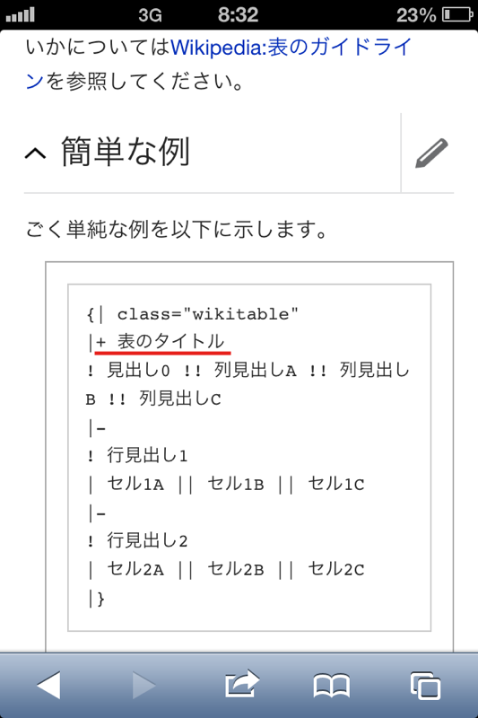

Rendering of fonts on mobile
Pune Language Summit, November 2013
Juliusz Gonera, Ryan Kaldari, Santhosh Thottingal
Common issues
- Mobile browsers are still worse than desktop browsers.
- Particular CSS rules can make text rendering quality worse.
- Testing everywhere impossible (many more mobile browsers than desktop browsers).
CSS animations
Making a website fancy can result in blurry text.
CSS animations
Solution: px in CSS transforms.
/* OK */
transform: translate3d(0, 100px, 0);
/* risky */
transform: translate3d(0, 10em, 0);
Example corner case
A CSS rule can change font rendering depending on used script.

Support for more scripts
- Webfonts to the rescue...
- ...but not on every platform
- ...and sometimes the cost might be high, e.g. additional 74KB (WOFF) or 193KB (TTF) for Saurashtra language
WOFF support
Source: caniuse.com
Questions (from us)
- What fonts are often missing on mobile platforms?
- Have you observed any font rendering issues on mobile?
Thank you
Questions (from you)?